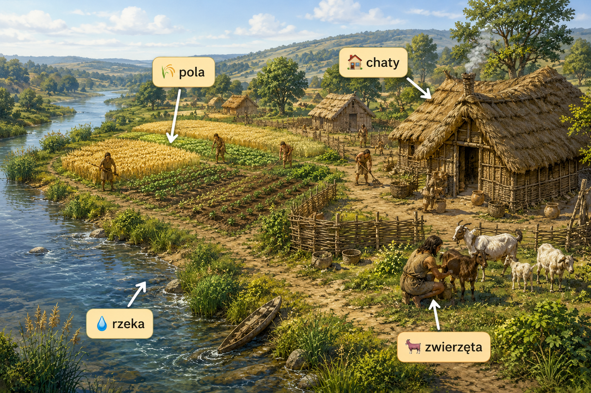
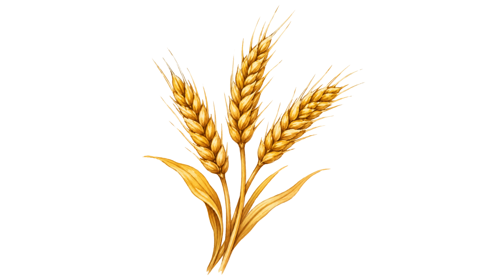
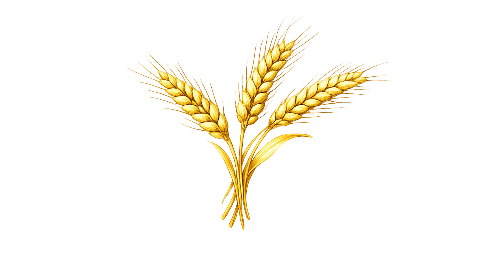
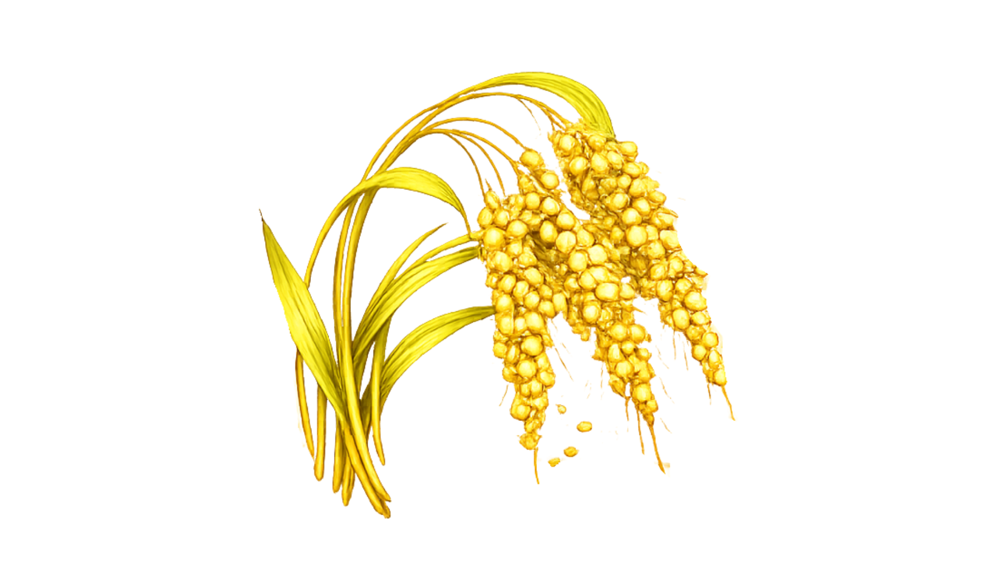
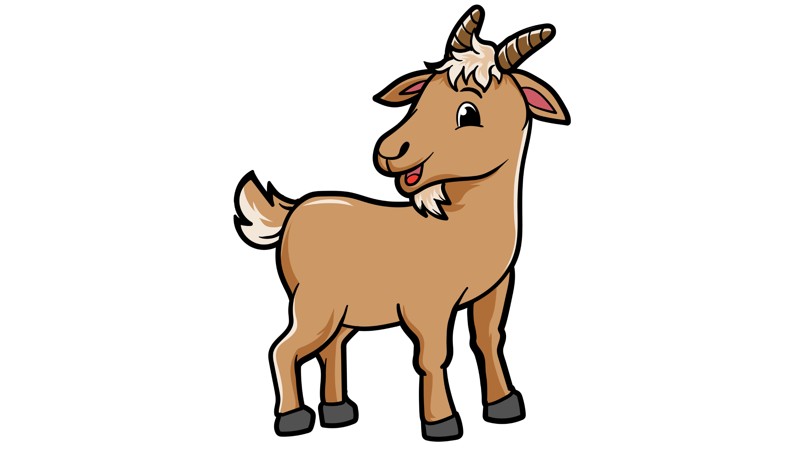
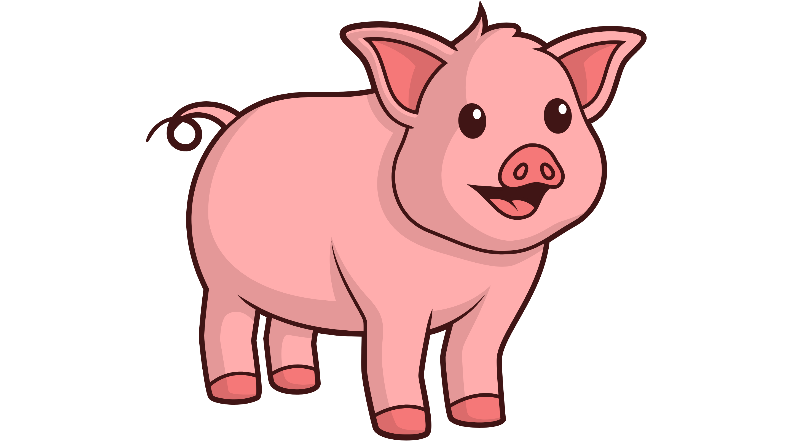
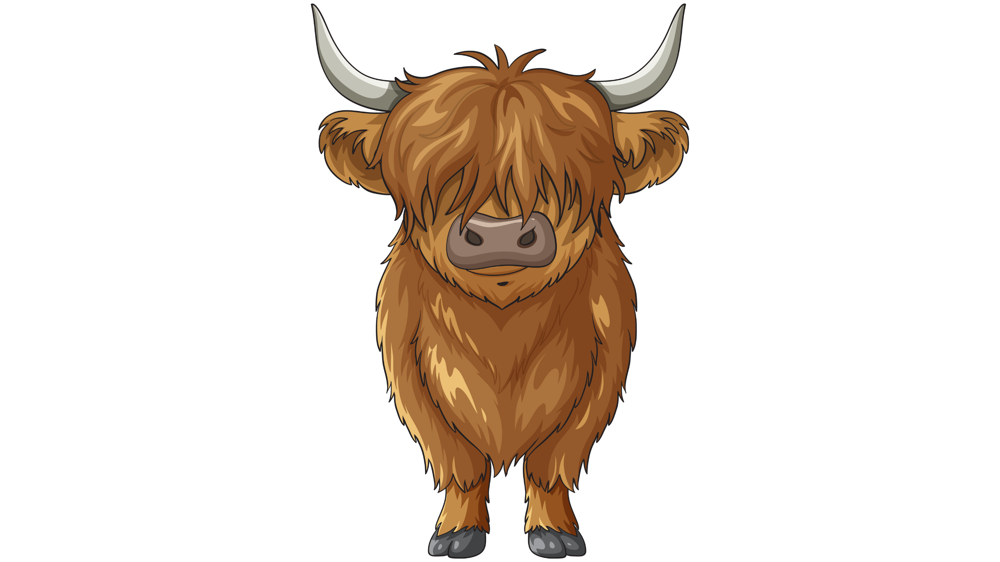
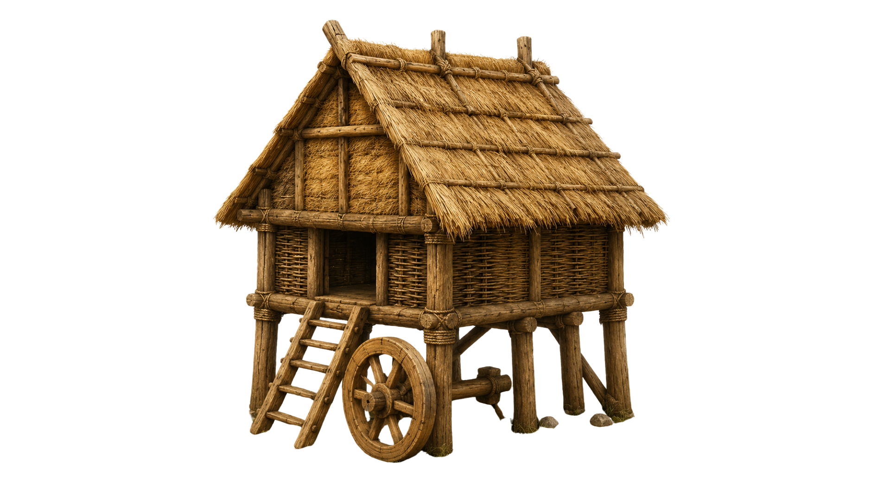
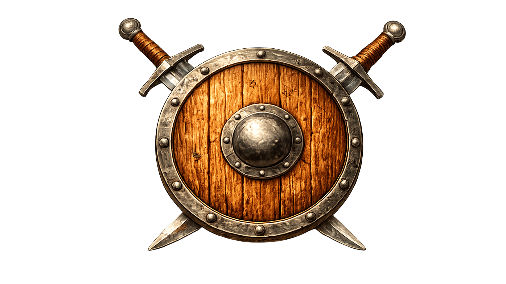
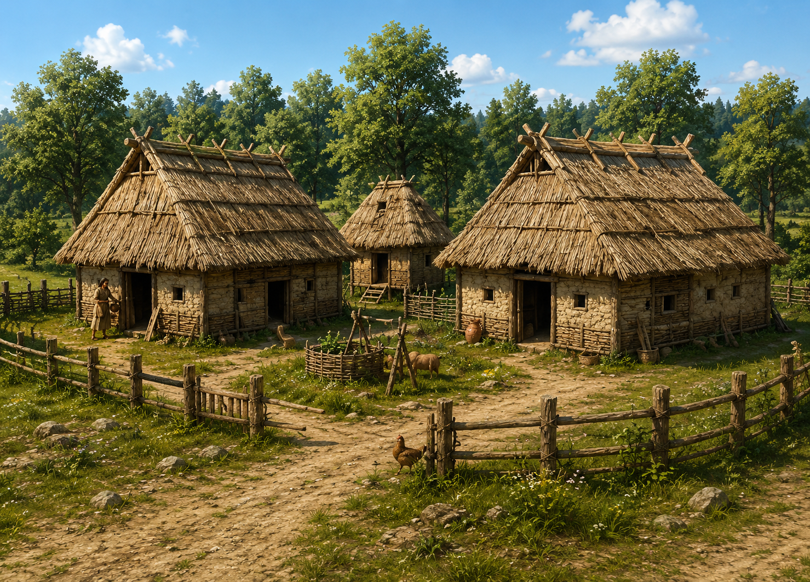

Około 10 tysięcy lat p.n.e. ludzie nauczyli się uprawiać rośliny i hodować zwierzęta.
Dzięki temu nie musieli już stale wędrować w poszukiwaniu pożywienia.

Ludzie zaczęli wysiewać zboża i zbierać plony.

pszenica
jęczmień
prosoOswojono pierwsze zwierzęta hodowlane.
 owce
owce

kozy
świnie
bydło więcej pożywienia
więcej pożywienia

zapasy na zimę
bezpieczniejsze życie
powstawały osady budowano stałe domy
budowano stałe domy
 rosła liczba mieszkańców
rosła liczba mieszkańców

Rolnictwo było jedną z największych zmian w dziejach człowieka. Aby uprawiać ziemię, pierwsi rolnicy musieli osiedlić się na stałe w pobliżu swoich pól.
➜ Dzięki niemu zaczęły powstawać pierwsze osady. Przestali więc przenosić się z miejsca na miejsce i zamienili koczowniczy tryb życia na osiadły.